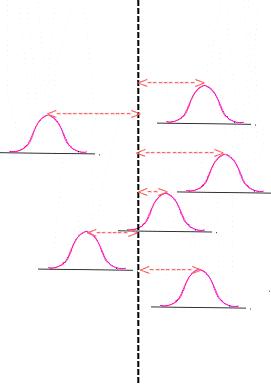
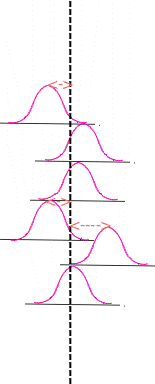

|
2.
Measurement Process Characterization
2.4. Gauge R & R studies
|
|||
| Analysis of variability from a nested design | The purpose of this section is to show the effect of various levels of time-dependent effects on the variability of the measurement process with standard deviations for each level of a 3-level nested design. The graph below depicts possible scenarios for a 2-level design (short-term repetitions and days) to illustrate the concepts. | ||
| Depiction of 2 measurement processes with the same short-term variability over 6 days where process 1 has large between-day variability and process 2 has negligible between-day variability |
Process 1 Process 2 Large between-day variability Small between-day variability   |
||
| Hint on using tabular method of analysis |
An easy way to begin is with a 2-level
table with J columns and K rows for the
repeatability/reproducibility measurements and proceed as follows:
|
||
| Level-1: LK repeatability standard deviations can be computed from the data | The measurements from the nested design are denoted by $$Y_{lkj}(l = 1, \, \ldots, \, L, \,\, k=1, \,\ldots, \, K, \,\, j=1, \,\ldots, \, J) \,\, .$$ Equations corresponding to the tabular analysis are shown below. Level-1 repeatability standard deviations, \( {\large s}_{1lk} \) , are pooled over the K days and L runs. Individual standard deviations with (J - 1) degrees of freedom each are computed from J repetitions as $$ s_{1lk} = \sqrt{\frac{1}{J-1} \sum_{j=1}^{J}{(Y_{lkj} - \overline{Y}_{lk{\small \, \bullet}})^2}} $$ where $$ \overline{Y}_{lk{\small \, \bullet}} = \frac{1}{J}\sum_{j=1}^{J}{\overline{Y}_{lkj}} \,\, . $$ | ||
| Level-2: L reproducibility standard deviations can be computed from the data | The level-2 standard deviation, \( {\large s}_{2l} \), is pooled over the L runs. Individual standard deviations with (K - 1) degrees of freedom each are computed from K daily averages as $$ {\large s}_{2l} = \sqrt{\frac{1}{K-1} \sum_{k=1}^{K}{\left( Y_{lk{\small \, \bullet}} - \overline{Y}_{l{\small \, \bullet \bullet}} \right)^2}} $$ where $$ \overline{Y}_{l{\small \, \bullet \bullet}} = \frac{1}{K}\sum_{k=1}^{K}{\overline{Y}_{lk {\small \, \bullet}}} \,\,\, .$$ | ||
| Level-3: A single global standard deviation can be computed from the L-run averages | A level-3 standard deviation with (L - 1) degrees of freedom is computed from the L-run averages as $$ {\large s}_{3} = \sqrt{\frac{1}{L-1} \sum_{l=1}^{L}{\left( Y_{l{\small \, \bullet \bullet}} - \overline{Y}_{{\small \bullet \bullet \bullet}} \right)^2}} $$ where $$ \overline{Y}_{{\small \bullet \bullet \bullet}} = \frac{1}{L}\sum_{l=1}^{L}{\overline{Y}_{l {\small \, \bullet \bullet}}} \,\,\, . $$ | ||
| Relationship to uncertainty for a test item | The standard deviation that defines the uncertainty for a single measurement on a test item is given by $$ {\large s}_R = \sqrt{{\large s}_{runs}^2 + {\large s}_{days}^2 + {\large s}_1^2} = \sqrt{{\large s}_3^2 + \frac{K-1}{K} {\large s}_2^2 + \frac{J-1}{J} {\large s}_1^2} \,\, , $$ where the pooled values, \( {\large s}_1 \) and \( {\large s}_2 \), are the usual $$ {\large s}_1 = \sqrt{\frac{\sum_{l=1}^{L}{\sum_{k=1}^{K}{{\large s}_{1lk}^{2}}}}{LK}} $$ and $$ {\large s}_2 = \sqrt{\frac{1}{L} \sum_{l=1}^{L}{{\large s}_{2l}^{2}}} \,\,\, . $$ The time-dependent components can be computed individually as: $$ {\large s}_{runs} = \sqrt{{\large s}_3^2 - \frac{1}{K} {\large s_2^2}} $$ $$ {\large s}_{days} = \sqrt{{\large s}_2^2 - \frac{1}{J} {\large s_1^2}} \,\,\, .$$ There may be other sources of uncertainty in the measurement process that must be accounted for in a formal analysis of uncertainty. | ||